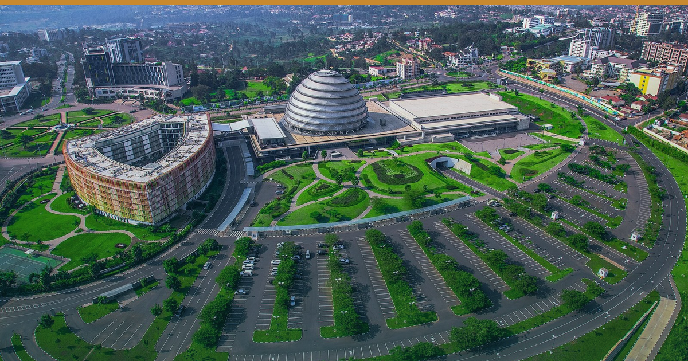

← All editionsTHE THEME: YOUR PACE REPORT ONLY SEES THE CHANNEL THAT'S SHRINKING.
🗓 Sunday 16 August 2026 | 🇹🇿 🇰🇪 🇺🇬 🇷🇼
THE THEME: YOUR PACE REPORT ONLY SEES THE CHANNEL THAT'S SHRINKING
Two numbers landed three days apart. On 12 Aug TUI reported Summer 2026 booked revenue down 6% season-to-date (TUI Q3 FY26). On 14 Aug Zanzibar posted July arrivals of 107,801 — an all-time record, +9.6% year on year (OCGS via The Citizen). Both true, and compatible only one way: the growth arrives through channels that produce no forward booking. Europe's share fell from 61.9% in June to 56.4% in July; on our calculation non-European arrivals grew about +77% month-on-month against Europe's +41%.
What everyone is missing: this is a measurement failure before it is a demand story. Pace and allocation were built on the shrinking channel and barely see the growing one, so the pace report shows a hole that isn't there — and the reflex is to discount into it. The short-window channel also cancels at double the rate: 21.8% OTA vs 10.6% direct (Cloudbeds, 25 Mar 2026).
━━━━━━━━━
THE WEEK'S SIGNALS
1️⃣ 🇹🇿 THE OPERATOR ISN'T LEAVING — IT'S ARRIVING LATE
TUI's Q3 revenue fell 5.6% to €5.8bn, yet it reaffirmed FY EBIT guidance of €1.1–1.4bn, last four weeks +7% (12 Aug). Its Winter 2027 programme centres on Zanzibar: first UK direct package flights, Gatwick twice weekly from 3 Nov 2027 (TUI newsroom, 2 Jul 2026).
🎯 So what: Don't sign multi-year allocation on 2026 terms. A low net rate locked now expires exactly when pricing power returns.
🏷 Beach · Zanzibar/Global · Confirmed
2️⃣ 🇹🇿 A RECORD MONTH THAT WASN'T EUROPEAN
July's 107,801 was 2.68× May's 40,151 — a wider peak-to-trough swing than a year ago, not a narrower one (OCGS, 14 Aug).
🎯 So what: Split pace into two lines with two lead times — allocation, and direct+OTA. A blended line measures a shrinking share of the book and calls it the whole book.
🏷 Beach · Tanzania/Zanzibar · Confirmed (OCGS) / Inference
3️⃣ 🇺🇬 WASHINGTON KEEPS UGANDA RESTRICTED ON A CONGOLESE NUMBER
The US entry order signed 12 Aug publishes 17 Aug (FR Doc 2026-16706, docket CDC-2026-0892): it logs Uganda's 28 July all-clear, then keeps Uganda listed on cross-border grounds. Expiry 11 Sep, comments close ~1 Sep. WHO AFRO put DRC at 4,381 confirmed, CFR 45.9% as of 9 Aug (SitRep 13, 11 Aug).
🎯 So what: Brief agents to 11 Sep, not 28 Aug — and file on the docket before ~1 Sep. This industry never has.
🏷 Uganda/Regional · Bush/City · Confirmed
4️⃣ ✅ LEDGER — P062 CORRECT — we called Europe ≥55% in the next OCGS release (10 Aug); it printed 56.4% (14 Aug). A ceiling, not a floor.
━━━━━━━━━
🌍 18 Aug — WHO IHR Committee on the PHEIC. Don't pre-brief a downgrade.
🇰🇪 19 Aug — Kenya Draft 2026 BROP comment closes. File via your association.
🇹🇿 28 Aug — WTA Africa Gala, Zanzibar. Coast compression that week.
🌍 11 Sep — US entry order decision. Brief US agents to this date, not 28 Aug.
🇰🇪 ~15 Sep — EPRA fuel review. No cushion left; model a step-up.
🇹🇿 ~mid-Sep — OCGS Zanzibar August arrivals. Europe under 60% = structural.
🇹🇿 3 Oct — Airlink's first Cape Town–Zanzibar non-stop. Get SA trade on your rate sheet.
🇰🇪 6–8 Oct — MKTE Nairobi, 10,000+ delegates. Close out standard rate now.
🔗 This edition on the web: https://eahospitalitypulse.com/editions/foresight-2026-08-16.html
💼 This week's Big Read on LinkedIn: https://www.linkedin.com/company/ea-hospitality-pulse/
— EA Hospitality Pulse | Daily intelligence for city, bush & beach properties
📣 Telegram (full editions) 💬 WhatsApp (daily skim) 💼 LinkedIn (the Big Read) 🗂 Every edition